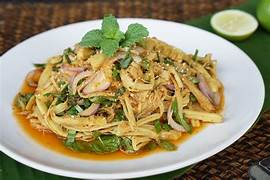

ซุปหน่อไม้
อาหารพื้นเมืองที่มีรสชาติเป็นเอกลักษณ์ ซุปหน่อไม้เป็นอาหารที่เป็นที่นิยมของชาวอีสานเช่นกัน ซึ่งสามารถหากินได้แทบจะทุกจังหวัด แต่กรมวิธีในการปรุงซุปหน่อไม้นั้นอาจจะมีความแตกต่างกันไปในแต่ละถิ่นแต่ก็ไม่ต่างกันอย่างสิ้นเชิงซุปหน่อไม้ก็เช่นเดียวกับอาหารอื่นๆของภาคอีสานคือจะมีรสจัดจ้าน และมีเครื่องปรุงหลักที่ขาดไม่ได้เลยคือน้ำปลาร้าเรียกได้ว่าชาวอีสานทุกครัวเรือนจะต้องมีน้ำปลาร้าประจำอยู่ในครัวถ้าไม่มีอาหารอะไรก็จะเอาปลาร้ามาตำน้ำพริก